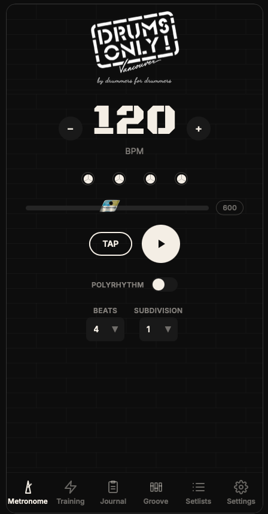

Building a metronome app for a drum store
Building a metronome was my first foray into coding with AI. Every new release, I would try and build a new one. With the early versions of ChatGPT, it would write a little bit of code, then cap out. I would have to jankily copy and paste things around to make it run. But this gave me a reference point for how much things improved with each model release. And boy, are we in a different world now. I was able to build this latest one so quickly that it was almost alarming.
I built this latest version as a web app, then ported it to iOS. It combines gap click, polyrhythm tools, and the ability to program your own beats. I thought features like these would be common in most metronome apps, but good ones are hard to come by.
There are cool little details that musicians would notice and want, but they rarely make it onto the radar of developers building these apps. One example is the tempo slider. I made its handle look like a Ludwig badge. Obviously, I’m ignoring the copyright and trademark side of that for this prototype. But with code becoming so cheap to produce, it’s easy for a hobbyist to design an app around their own niche tastes. I think this will be a big advantage for new builders using these tools.

I’ve had the idea that building bespoke apps for niche businesses could be a business of its own. For example, each drum store could have its own metronome app that serves as a marketing tool, offers in-app purchases, or links to the store’s online shop. Previously, it would have been too costly to make five or ten different metronome apps, but now it feels trivial.
So I built this prototype with a drum shop in Vancouver in mind. It is not released yet, but I think the idea holds up. It has been a fun app to build, and I think there are a lot of small, industry-specific apps like this that could be useful.
Try the prototype here: metronome app